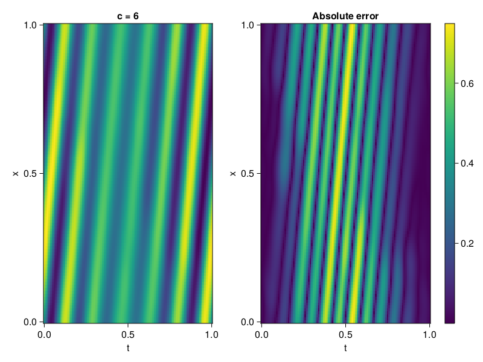
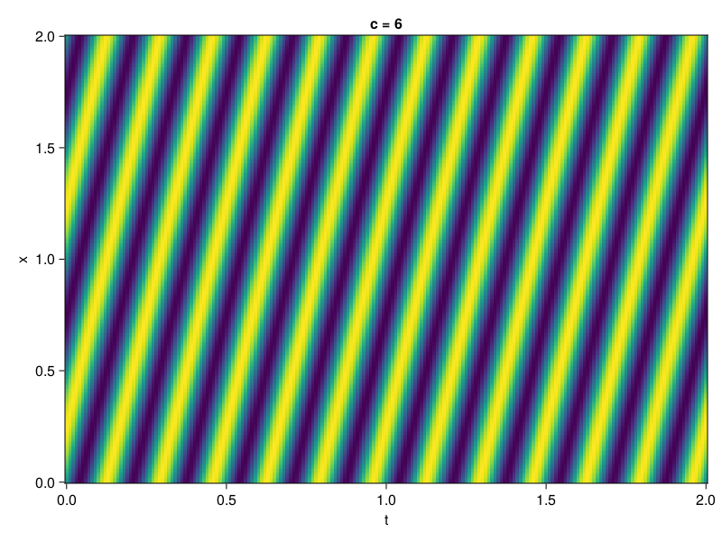

1D Convection Equation
Consider the following 1D-convection equation with periodic boundary conditions.
\[\begin{aligned} &\frac{\partial u}{\partial t}+c \frac{\partial u}{\partial x}=0, x \in[0,1], t \in[0,1] \\ &u(x, 0)=sin(2\pi x) \\ \end{aligned}\]
First we define the PDE.
using NeuralPDE, Lux, Random, Sophon, IntervalSets, CairoMakie
using Optimization, OptimizationOptimJL, OptimizationOptimisers
@parameters x, t
@variables u(..)
Dₜ = Differential(t)
Dₓ = Differential(x)
c = 4
eq = Dₜ(u(x,t)) + c * Dₓ(u(x,t)) ~ 0
u_analytic(x,t) = sinpi(2*(x-c*t))
domains = [x ∈ 0..1, t ∈ 0..1]
bcs = [u(x,0) ~ u_analytic(x,0)]
@named convection = PDESystem(eq, bcs, domains, [x,t], [u(x,t)])\[ \begin{align} 4 \mathrm{\frac{d}{d x}}\left( u\left( x, t \right) \right) + \mathrm{\frac{d}{d t}}\left( u\left( x, t \right) \right) =& 0 \end{align} \]
Imposing periodic boundary conditions
We will use BACON to impose the boundary conditions. To this end, we simply set period to be one.
chain = BACON(2,1; hidden_dims = 32, num_layers=5, period = 1, N = 5)MultiplicativeFilterNet(
filters = BranchLayer(
filter_1 = DiscreteFourierFeature(2 => 32), # 32 parameters, plus 64
filter_2 = DiscreteFourierFeature(2 => 32), # 32 parameters, plus 64
filter_3 = DiscreteFourierFeature(2 => 32), # 32 parameters, plus 64
filter_4 = DiscreteFourierFeature(2 => 32), # 32 parameters, plus 64
filter_5 = DiscreteFourierFeature(2 => 32), # 32 parameters, plus 64
),
linear_layers = PairwiseFusion(
Base.Broadcast.BroadcastFunction{typeof(*)}(*)
layer_1 = Dense(32 => 32), # 1_056 parameters
layer_2 = Dense(32 => 32), # 1_056 parameters
layer_3 = Dense(32 => 32), # 1_056 parameters
layer_4 = Dense(32 => 32), # 1_056 parameters
),
output_layer = Dense(32 => 1), # 33 parameters
) # Total: 4_417 parameters,
# plus 320 states, summarysize 240 bytes.For demonstration purposes, the model is also periodic in time
discretization = PhysicsInformedNN(chain, QuasiRandomTraining(300; resampling = false, minibatch = 1); adaptive_loss = NonAdaptiveLoss(; bc_loss_weights = [100]))
prob = discretize(convection, discretization)
@time res = Optimization.solve(prob, LBFGS(); maxiters = 500)u: ComponentVector{Float64}(filters = (filter_1 = (bias = [0.7462456031029794; 0.4561559508614561; … ; 0.9144135309398049; 0.12327284114318174;;]), filter_2 = (bias = [0.7101980185237443; -0.4122135962647965; … ; 0.8440047196374276; 0.23888977959775168;;]), filter_3 = (bias = [-0.7544258152274103; -0.5887501169302994; … ; -0.004851112077053013; -0.7021677521511054;;]), filter_4 = (bias = [0.2273482633632626; -0.3919928247632233; … ; 0.5490869154608797; -0.2969707495418249;;]), filter_5 = (bias = [0.7641280912283007; -0.7971050623300658; … ; -0.7363357290041777; 0.5669231026791304;;])), linear_layers = (layer_1 = (weight = [-0.3812885377168432 -0.09977797567622784 … 0.341375374044633 -0.08313199174188618; 0.044957981804781555 0.09650017215407222 … 0.047506935979700224 0.3195581425710566; … ; 0.05712487083705844 -0.24241321832534024 … 0.16946918991475712 -0.22549363270328004; 0.15141188181306828 -0.06650905425403583 … 0.18331977784095302 0.37443876373262613], bias = [-0.0767205000405262; 0.07623398494437614; … ; 0.0266845284936652; -0.027147405050909356;;]), layer_2 = (weight = [0.010607875013796673 -0.12213897351328983 … 0.10692598665737234 0.24566489392625873; 0.34570538213511337 0.21534735243787254 … -0.24206706950221188 -0.19809360624100725; … ; 0.15342151137226184 0.38518008645714275 … -0.08372088972682586 -0.028376701198982543; 0.11532906749021773 -0.08823439817776413 … 0.19611952892680978 0.23200404483504616], bias = [0.0037376207380265913; -0.04984635419577652; … ; 0.00027732288121227664; -0.053049396722057524;;]), layer_3 = (weight = [-0.21664485323105312 0.07589930674662428 … 0.3602287245292204 0.05281025365410015; -0.4170506936819063 -0.34064269846144757 … -0.16405758533302137 -0.07714764255139214; … ; 0.3180890779724948 -0.21629644219734012 … -0.13814972080982 0.10053113654166052; -0.2085990669554242 -0.337152427523186 … -0.2519676006904969 -0.052164952296729544], bias = [-0.0019076919873275311; -0.0052364653664565995; … ; -0.06394074154571354; -0.0553188317344541;;]), layer_4 = (weight = [0.1341468898879501 -0.3186658168959745 … 0.12099670508855244 0.011956042531165468; 0.16985934897344238 -0.24178119926241057 … 0.1190978324917761 -0.3602924064457423; … ; 0.2413546236523508 -0.18889976445516785 … 0.1867771436621837 -0.07358661270458697; -0.046618948472664276 0.1483172465146603 … -0.0630323622367924 0.3842683252497515], bias = [-0.013969521207991052; 0.013906016918587125; … ; -0.01300656643807351; -0.017381928475052558;;])), output_layer = (weight = [0.10829396955172697 0.21558636110231202 … -0.021223471655618047 -0.4167860788302616], bias = [0.1568874786210874;;]))Let's visualize the result.
phi = discretization.phi
xs, ts= [infimum(d.domain):0.01:supremum(d.domain) for d in domains]
u_pred = [sum(phi([x,t],res.u)) for x in xs, t in ts]
u_real = u_analytic.(xs,ts')
fig, ax, hm = CairoMakie.heatmap(ts, xs, u_pred', axis=(xlabel="t", ylabel="x", title="c = $c"))
ax2, hm2 = heatmap(fig[1,end+1], ts,xs, abs.(u_pred' .- u_real'), axis = (xlabel="t", ylabel="x", title="Absolute error"))
Colorbar(fig[:, end+1], hm2)
We can verify that our model is indeed, periodic.
xs, ts= [infimum(d.domain):0.01:supremum(d.domain)*2 for d in domains]
u_pred = [sum(phi([x,t],res.u)) for x in xs, t in ts]
fig, ax, hm = CairoMakie.heatmap(ts, xs, u_pred', axis=(xlabel="t", ylabel="x", title="c = $c"))